使用虚拟机模拟搭建Kubenetes集群
准备工作
| 用户名 | hostname | ip地址 |
| user | ubuntu18 | 192.168.1.105 |
| user | ubuntu18-2 | 192.168.1.108 |
系统版本 Ubuntu 18.04LTS
注意，虚拟机的处理器个数要设置为2个
配置好后使用ping来测试主机之间是否可以正常通讯：
节点配置
在每个节点上安装docker
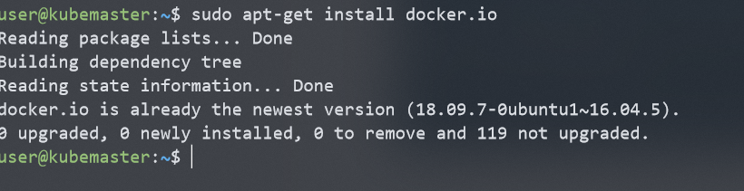
将用户加入Docker用户组，然后重启机器或者注销重新登陆
user@kubemaster:~$ sudo usermod -aG docker $USER user@kubemaster:~$ sudo rebootdocker安装测试
登陆docker账户
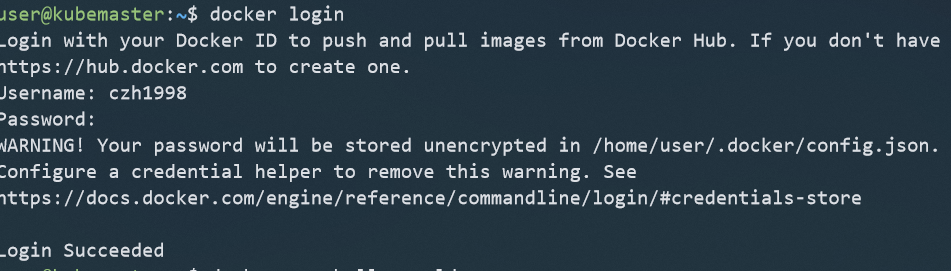
运行hello-world
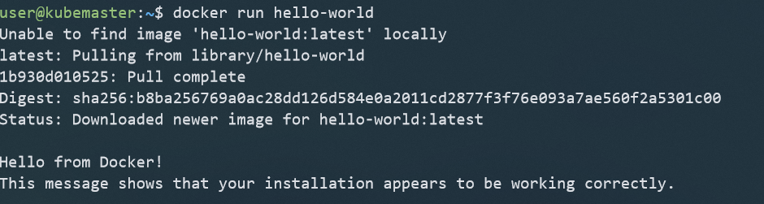
在所有结点上安装Kubernetes组件
软件源配置
在/etc/apt/source.list.d/路径下创建文件kubernetes.list，写入中科大的镜像地址deb http://mirrors.ustc.edu.cn/kubernetes/apt kubernetes-xenial main。然后执行apt-get update，注意在这步如果遇到GPG error提示公钥缺失，则执行以下的命令添加公钥，然后再update。
sudo apt-key adv --keyserver keyserver.ubuntu.com --recv-keys <PUBKEY>其中
就是提示你缺失的公钥。例如BAF9A6FBAF9A6FBAF9A6F。 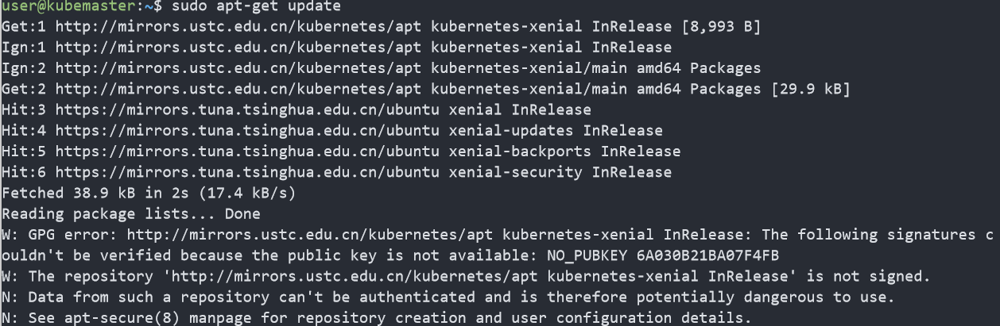
软件安装：在每个机器上安装kubernetes组件，注意版本号，选用较为稳定的1.15版本
# 指定版本为1.15 sudo apt-get install kubectl=1.15.3-00 kubeadm=1.15.3-00 kubelet=1.15.3-00 -y --allow-unauthenticated
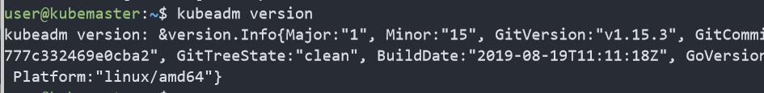
在所有节点上禁用swap
sudo swapoff -a
主节点配置
做好准备工作和软件安装的工作后，需要进行主节点的配置。然后再将worker结点加入进去。
使用kubeadm初始化master结点
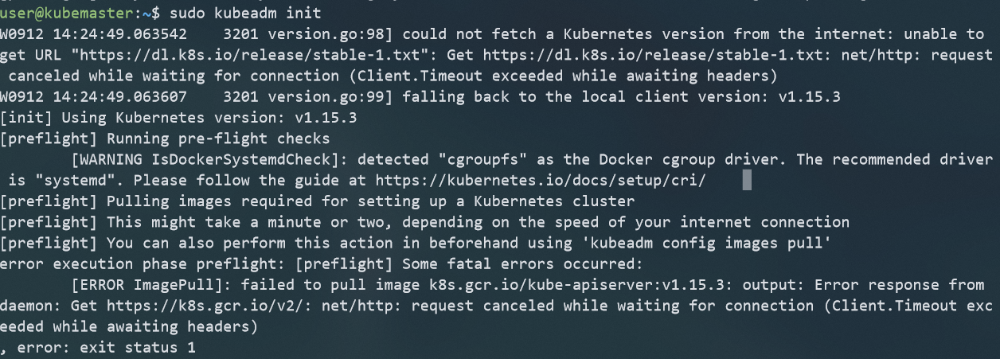
这里发现初始化失败，是由于初始化时需要从https://k8s.gcr.io.v2拉取镜像，而这个仓库被墙了。查阅文档发现，kubernetes v1.13之后的版本支持在init时通过
--image-reposigory参数来指定镜像仓库。使用阿里云的镜像仓库进行安装。
sudo kubeadm init --image-repository registry.aliyuncs.com/google_containers --kubernetes-version v1.15.3 --pod-network-cidr=192.168.0.0/16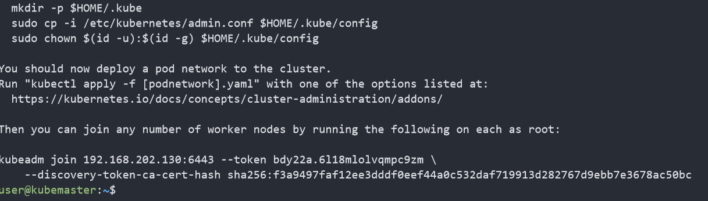
安装成功后，会给出如何将worker结点加入集群的指令，最好将这个指令储存下来。
配置kubectl，使得非root用户也可以使用kubectl
sudo cp /etc/kubernetes/admin.conf $HOME/ sudo chown $(id -u):$(id -g) $HOME/admin.conf export KUBECONFIG=$HOME/admin.conf验证:
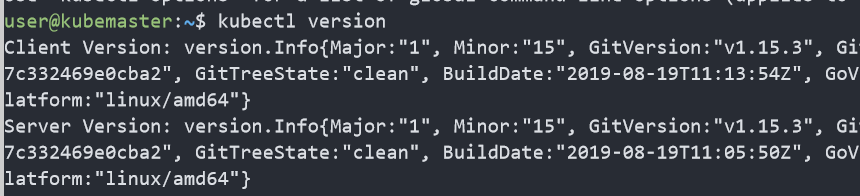
配置网络插件
为了让Pods间可以相互通信，我们必须安装一个网络插件，并且必须在部署任何应用之前安装，CoreDNS也是在网络插件安装之后才会启动的。 安装之前，查看pods的状态
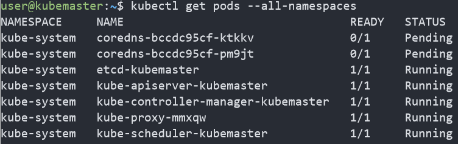
可以看到coredns的状态是pending，这是因为没有安装网络插件，通过如下的命令安装网络插件：
kubectl apply -f https://docs.projectcalico.org/v3.3/getting-started/kubernetes/installation/hosted/rbac-kdd.yaml kubectl apply -f https://docs.projectcalico.org/v3.3/getting-started/kubernetes/installation/hosted/kubernetes-datastore/calico-networking/1.7/calico.yaml # 上面的calico.yaml会去quay.io拉取镜像，如果无法拉取，可使用下面的国内镜像 kubectl apply -f http://mirror.faasx.com/k8s/calico/v3.3.2/rbac-kdd.yaml kubectl apply -f http://mirror.faasx.com/k8s/calico/v3.3.2/calico.yaml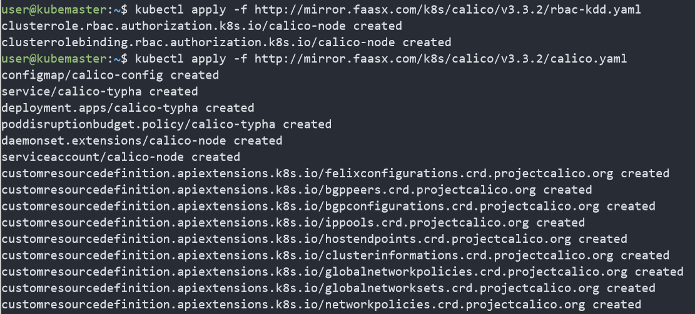
一段时间后，再次查看pods的运行情况:
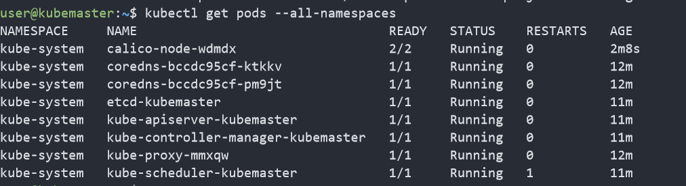
coredns服务也变为了running，网络插件安装成功。
可视化工具(Dash board)安装
Kubernetes Dashboard 是一个管理Kubernetes集群的全功能Web界面，旨在以UI的方式完全替代命令行工具（kubectl 等）。由于该工具的镜像仓库也被墙了，所以使用国内镜像安装，在Master结点上执行：
kubectl apply -f http://mirror.faasx.com/kubernetes/dashboard/master/src/deploy/recommended/kubernetes-dashboard.yaml
安装后查看部署状态：
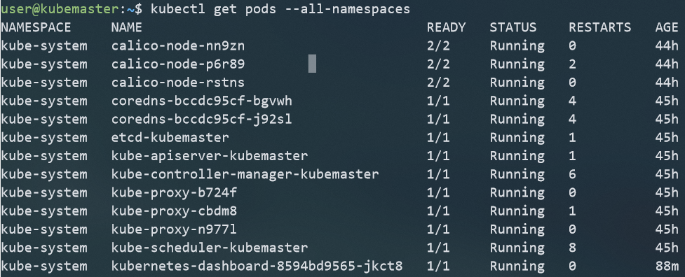
在本地访问
我们在命令行中执行kubectl proxy, 开启代理服务后，打开浏览器http://localhost:8001/api/v1/namespaces/kube-system/services/https:kubernetes-dashboard:/proxy/， 就可以进入dash-borad的登录页面：
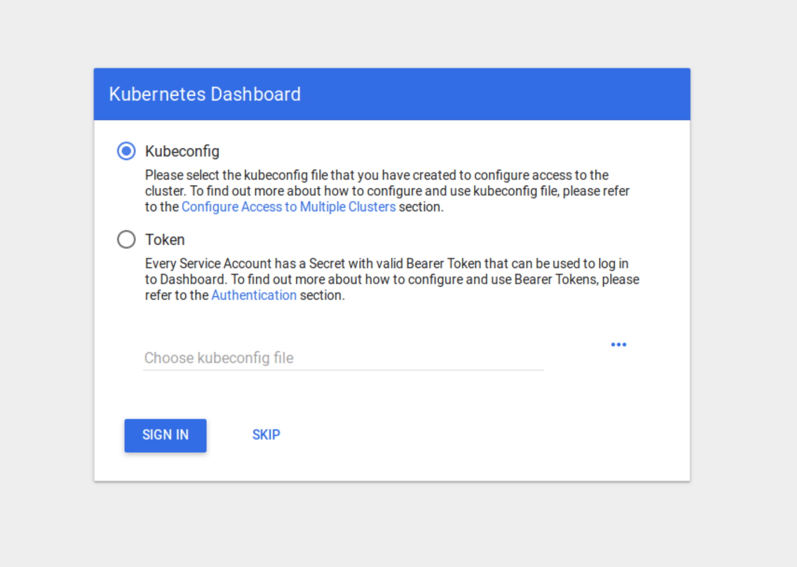
添加dashboard admin
创建服务账号
首先创建一个叫 admin-user的服务账号，并放在kube-system的名空间下：
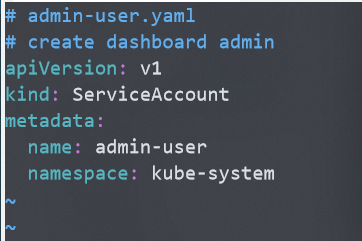
然后执行
kubectl create -f admin-user.yaml绑定角色
默认情况下，
kubeadm创建集群时已经创建了admin角色，我们直接绑定即可：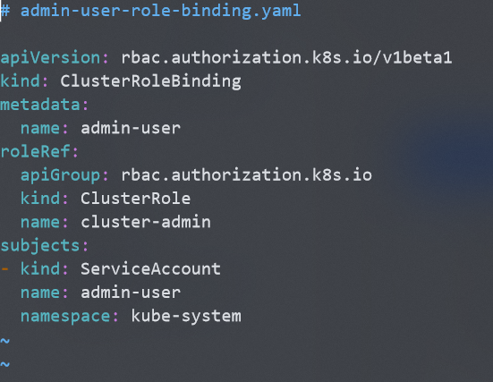
执行
kubectl create -f admin-user-role-binding.yaml命令.获取Token
通过
kubectl -n kube-system describe secret $(kubectl -n kube-system get secret | grep admin-user | awk '{print $1}')获取登录所需的token，登录后就可以查看集群状况。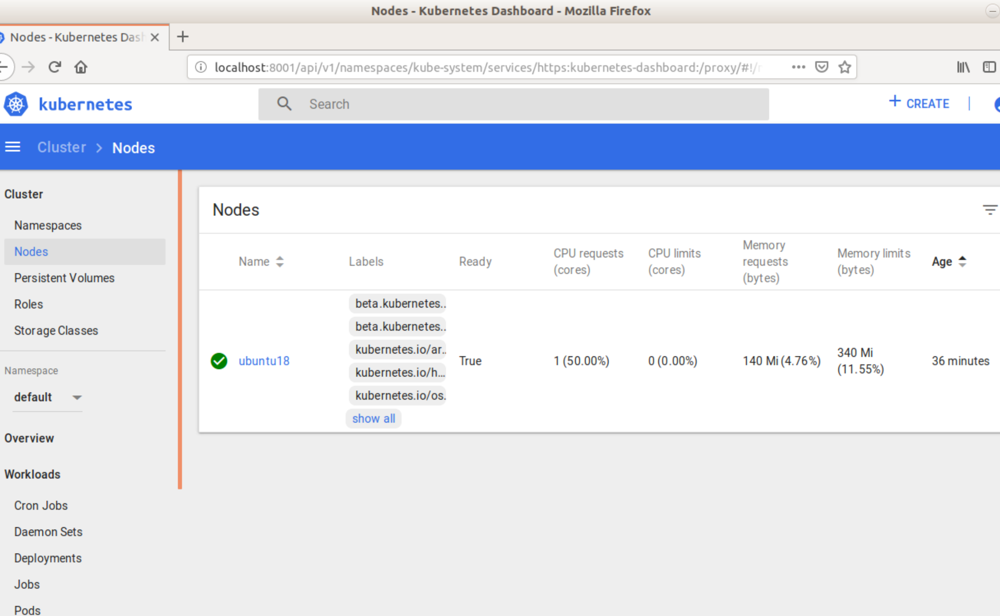
远程访问dashboard
使用kubectl proxy只能在master节点上访问dashboard，远程访问需要进行如下设置：
kubectl -n kube-system edit service kubernetes-dashboard
然后修改配置文件，添加nodePort为30007，将type修改为NodePort：
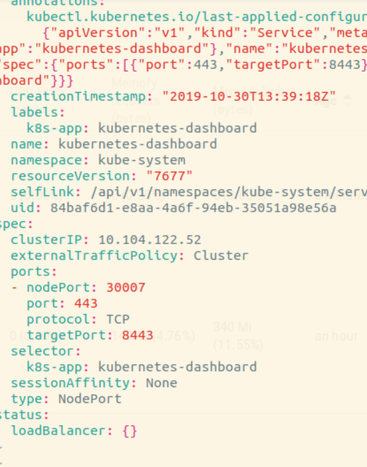
之后就可以通过https://
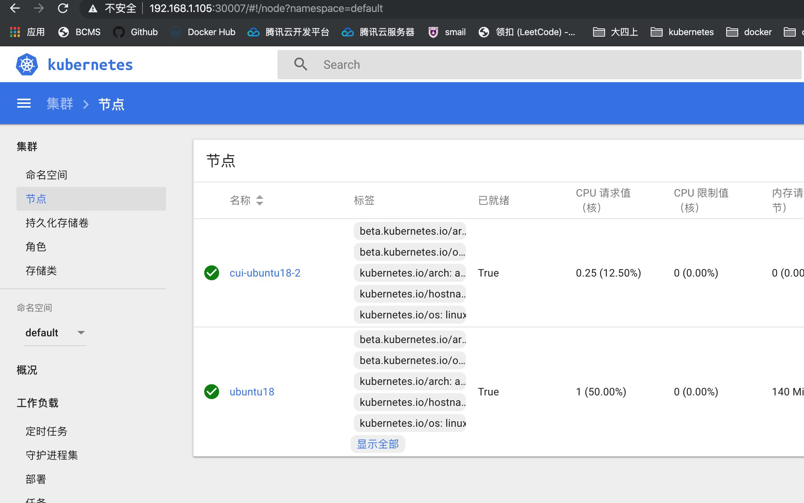
加入其它节点
在其他已经安装好kubernetes的机器上用root用户执行加入master节点的命令：
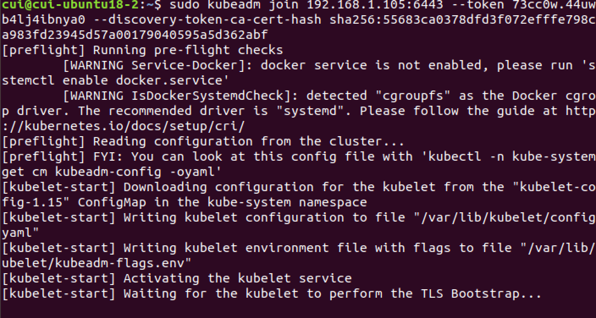
然后在master节点上使用kubectl get nodes 可以查看集群中所有的节点：
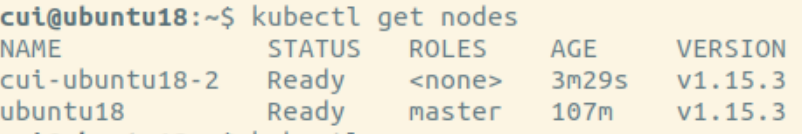
在dash-board上也可以查看到：
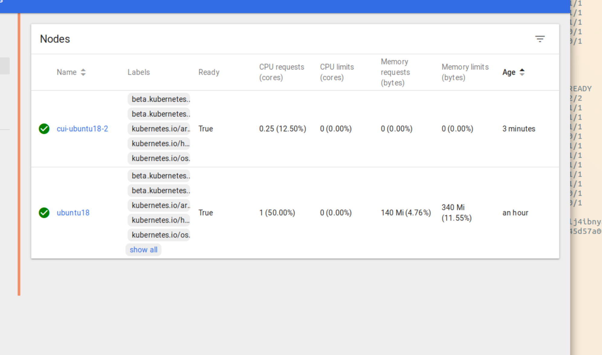
后续工作
学习Docker，kubernetes中的一些重要概念和使用方法。